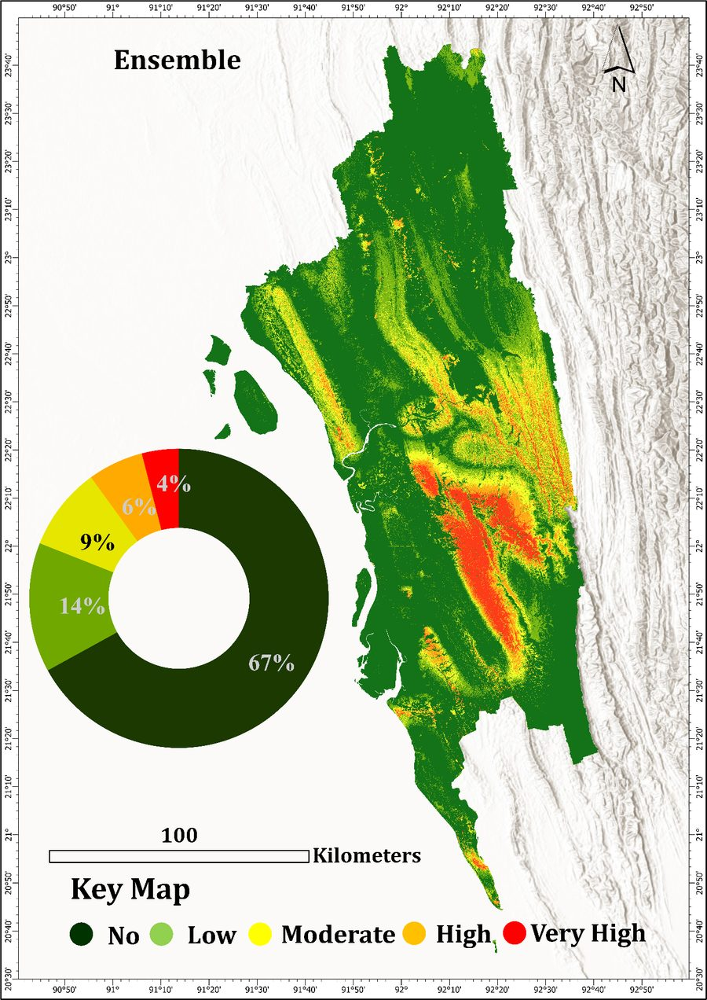
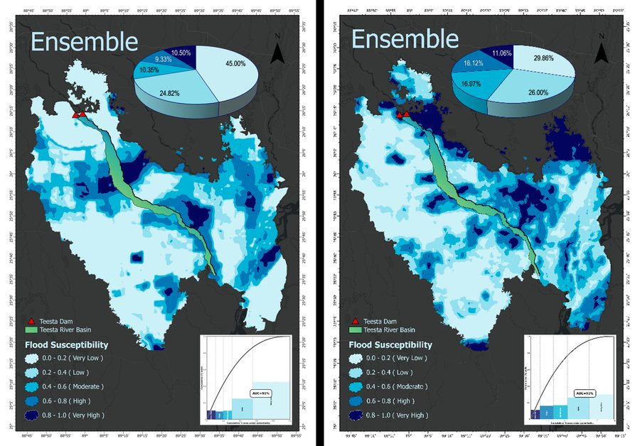
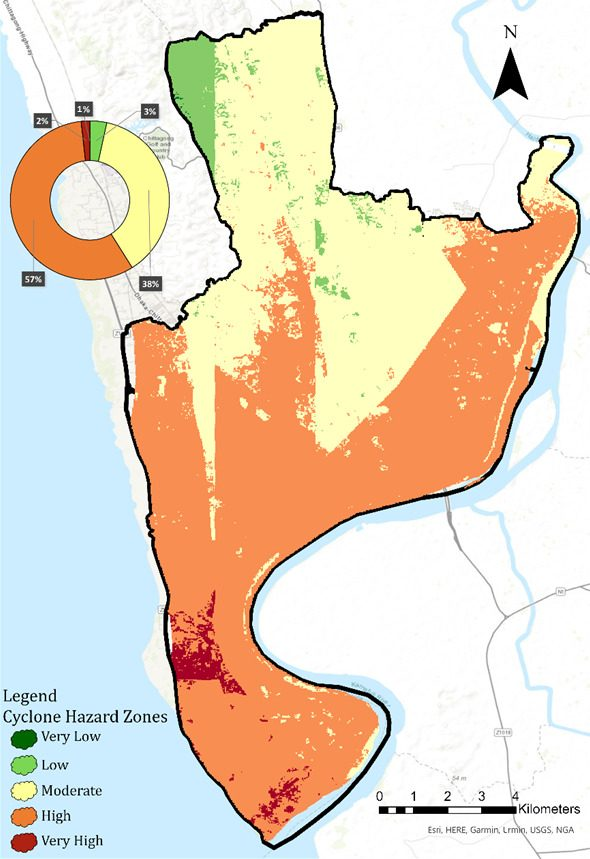
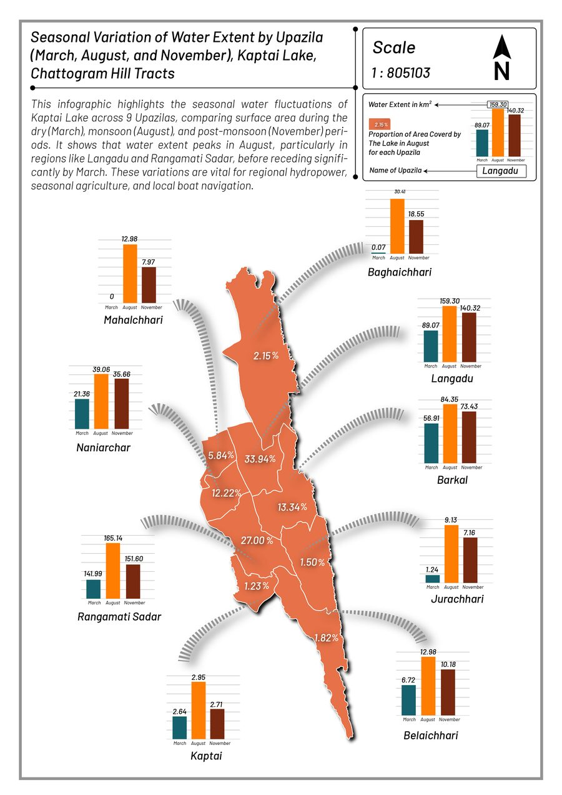

Q1 · Published21 Feb 2026
Researcher · Analyst · Visuospatial Learner
Urban and Rural Planning graduate from Khulna University, specializing in GIS and Remote Sensing. I turn satellite data into spatial insight that helps planners and policymakers make decisions on hazards, land, and people.
I graduated from the Urban and Rural Planning Discipline at Khulna University, where I built my focus around GIS and Remote Sensing. My work sits at the meeting point of spatial data science and social science: multi-hazard mapping, susceptibility modelling, and vulnerability assessment.
I integrate satellite-based spatial data with GIS, machine learning, and deep learning tools to visualize how change plays out over land and the people living on it. The goal is always the same, give planners and policymakers something concrete to act on.
I have worked across cyclone, flood, landslide, and earthquake hazard problems in Bangladesh, and I completed an internship at SPARRSO working on Kaptai Lake boundary delineation with Sentinel-1 and Sentinel-2 imagery.
Selected spatial analysis and hazard-mapping work. Click any project to open its map gallery.

Ensemble deep learning framework mapping landslide-prone zones and road vulnerability in the Chittagong Hill Tracts.
Open project →
SAR data and ensemble machine learning to model flash-flood susceptibility across the transboundary Teesta River basin.
Open project →
GIS-based MCDA with Analytic Hierarchy Process to assess cyclone vulnerability in Chittagong City Corporation.
Open project →
Tracking seasonal variation in water extent across pre-monsoon, monsoon, and post-monsoon periods using satellite data.
Open project →Bangladesh Space Research and Remote Sensing Organization. Kaptai Lake boundary delineation using Sentinel-1 and Sentinel-2, satellite data processing in ArcGIS, and project reporting.
Detecting vulnerable households through an intersectionality lens. Primary data from 200 households, statistical analysis in SPSS and Excel.
Arranged career-talk sessions with 160+ participants and managed the club's finances.
Led the team to first place, presenting an innovative housing solution before national-level judges.
Departmental recognition for maintaining a CGPA above 3.5, with a general scholarship in every semester.
Management committee across 30+ sessions and organizer of two job fairs.
Open to research collaboration, graduate opportunities, and spatial data projects.
abrar.muhtasim.pathan@gmail.com